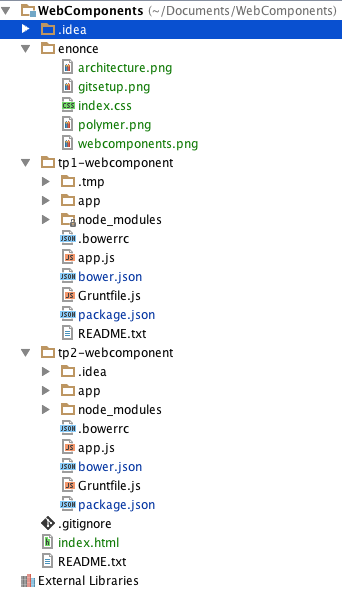
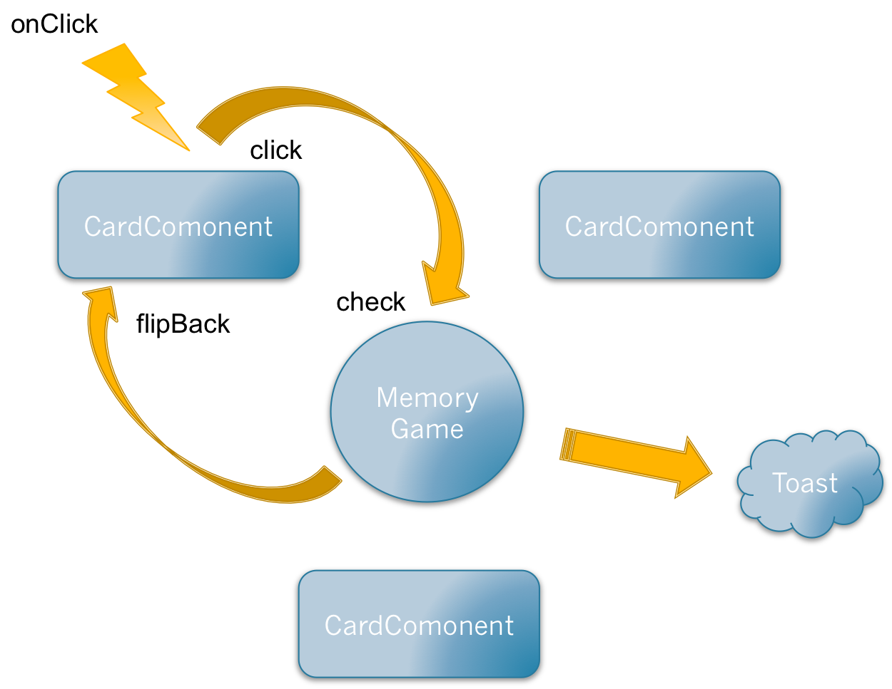

TP Inititation Webcomponents/Polymer
Votre poste de travail
Environnement système
Afin de réaliser ces divers TPs / exercices, vous aurez besoin de vous assurer que votre poste a bien été configuré.
En effet, nous allons avoir besoin d’utiliser au sein de la formation les outils suivants :
- Git
- NodeJs / NPM
- Chrome / Firefox 28 / Internet Explorer 11 / Safari 8
Git
Tout d’abord, nous allons installer Git. Pour savoir si vous l’avez, ouvrez un shell et tapez :
> git
Si le shell vous dit que la commande est inconnue, alors il va falloir l’installer. Dirigez-vous pour ce faire sur le site http://git-scm.com/download/win qui lancera le téléchargement pour Windows.
Suivez les écrans d’installation pas-à-pas et lorsque vous serez sur l’écran « Adjusting your PATH environment », sélectionnez « Use Git from the Windows command prompt » :
 Finissez la procédure d’installation. Une fois celle-ci terminée, relancez un shell, tapez de nouveau la commande que nous avons vue. Normalement, l’erreur indiquant que la commande est inconnue ne devrez plus s’afficher.
Finissez la procédure d’installation. Une fois celle-ci terminée, relancez un shell, tapez de nouveau la commande que nous avons vue. Normalement, l’erreur indiquant que la commande est inconnue ne devrez plus s’afficher.
NodeJs / NPM
NodeJs est un outil permettant d’exécuter du JavaScript côté serveur, mais également de récupérer des outils utiles pour nos projets (via NPM, qu’il intègre).
Pour savoir si vous avez NodeJs et NPM installer correctement, tapez d’abord la commande dans un shell :
> node
Puis
> npm
Si dans l’un des deux cas, vous voyez une erreur disant que la commande est inconnue, alors télécharger l’installeur pour Windows : http://nodejs.org/download/
Une fois cela fait, lancer l’installeur. Une fois la procédure finie, les commandes devraient être reconnues
Environnement de développement
Pour réaliser ces TPs, vous pouvez si vous le souhaitez utiliser un simple bloc-note, un NotePad++. Néanmoins, nous vous conseillons d’installer les IDEs suivants :
Avant de réaliser un exercice
Il faut savoir que vous ne pouvez-vous pas lancer directement dans les exercices. Il y a une manœuvre à faire avant, car comme pour un projet Maven, nous allons devoir télécharger des dépendances afin que notre projet fonctionne.
Pour cela, dirigez-vous vers un répertoire d’exercice et tapez ensuite la ligne de commande suivante :
npm install
Là, vous allez voir que la commande npm va télécharger plein de modules pour gérer correctement notre TP.
Une fois finie, npm vous liste tout ce qui a été installé.
Si c’est le cas, vous pouvez alors taper la commande suivante :
grunt
Cela va vous lancer un serveur pour afficher le site Web associé à l’exercice.
Et cela ouvre également par défaut dans votre navigateur par défaut l’url http://localhost:9000/ et vous afficher le site Web de l’exercice.
A chaque fois que vous modifierez le code HTML / JavaScript de l’exercice, votre page sera actualisée avec les modifications
Enoncés
Ossature du projet
Le projet que vous allez réaliser contient deux tps. Un premier tp pour prendre en main l’architecture Polymer et un deuxième pour utiliser des composants Polymer. Le but final est de créer le jeu « Memory ».

Un exercice correspond à un tp.
TP1
Le but de l’exercice va être ici de vous familiariser avec les bases des webcomponents avec Polymer. De ce fait :
- Commencez par lancer l’application
- Modifiez le fichier « card-component.html » de façon à avoir le même résultat :
- Pour cela, définissez le code HTML du composant ainsi que ses attributs. Information importante : Polymer fonctionne avec le data-binding, les attributs peuvent directement être utilisés dans le code Html par ce procédé ({{monAttribut}})
- Importez le composant dans le fichier « indexComponents.html ». Vous pouvez regarder le résultat à l’adresse http://localhost:9000/indexComponents.html.
- Reste à développer le retournement de la carte. Développez le corps de la fonction « flip ». Attention, pas de JQuery, il faut utiliser la nouveauté de polymer : Polymer.dom(this.root).querySelector.
TP2
Le but de l’exercice ici va être d’utiliser des composants Polymer dans une application un peu plus complexe. A la fin de ce tp, vous saurez faire communiquer des composants Polymer entre eux. Le but sera de réaliser le jeu « memory ».
Voici un schéma représentant les différentes entités du jeu ainsi que les échanges entre ces composants :

Lors du clic sur une carte, une fonction est exécutée qui remonte un évènement à l'élément "memory-game" avec les caractéristiques de la carte.
Toutes les deux cartes, le composant "check" les cartes pour les retourner dans le cas où elles ne sont pas de la même famille.
Lorsque toutes les cartes sont retournées un "toast" apparait pour donner le score au joueur ainsi que la possibilité de recommencer.
- Analysez les différents fichiers du projet et définissez leurs utilités.
- Identifiez les composants Polymer utilisés
- Faites en sorte que lors d’un clic sur une carte celle-ci se retourne (Utilisez un event Javascript basique)
- Communication entre composants
- Allez sur le site de https://elements.polymer-project.org/browse pour voir à quoi sert le composant "iron-signals" et comment l’utiliser.
- Faites-en sorte que le composant « memory-game » compte le nombre de coups joués (Utilisez un event Javascript classique).
- Ajoutez maintenant la vérification que les deux cartes retournées soient identiques. Pour cela vous utiliserez la fonction « check » du composant « memory-game » qui vérifie que la famille de la première carte retournée et la même que la seconde.
- Si les cartes ne sont pas identiques, envoyez un message aux cartes pour qu'elles se retournent (Utilisez le composant iron-signals).
- Faites en sorte que l’on ne puisse pas retourner une carte déjà retournée.
- Lorsque toutes les cartes sont retournées afficher le composant « paper-toast ». Puis faites en sorte que lorsque l’utilisateur clique sur « retry », le jeu recommence.
- Trouvez un moyen de voir l’effet de retournement des cartes lorsqu’elles ne sont pas de même famille. (Aide : utilisez la fonction setTimeout tout en bloquant le retournement des cartes)
BONUS : Customisez l’affichage du score sous forme de web components